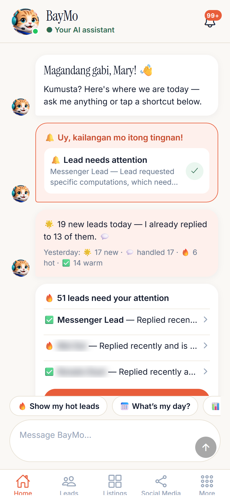
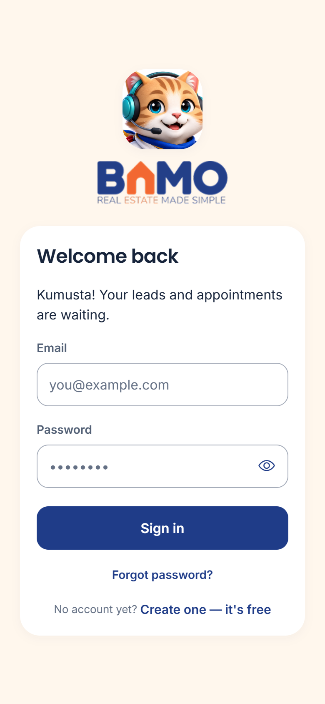
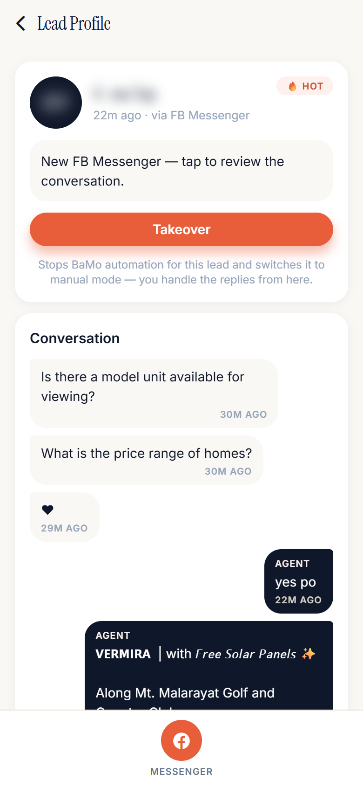
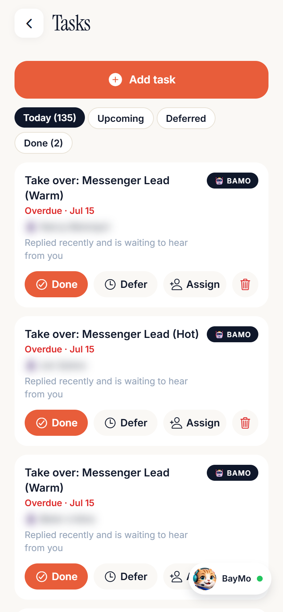
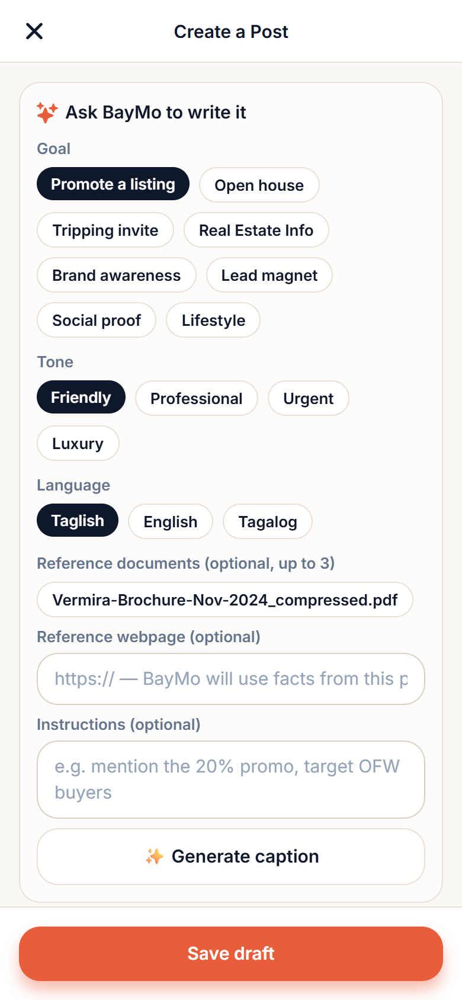
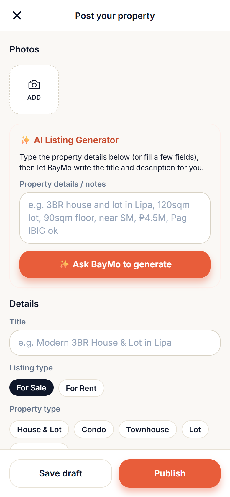
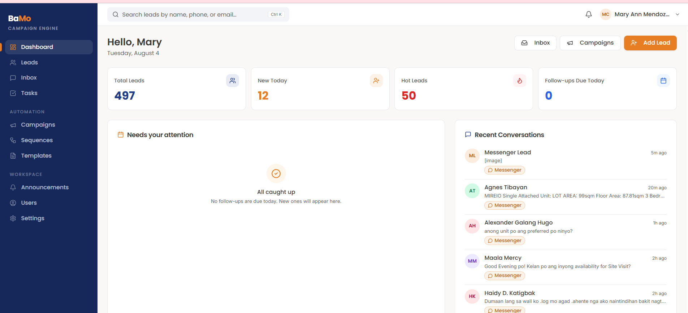
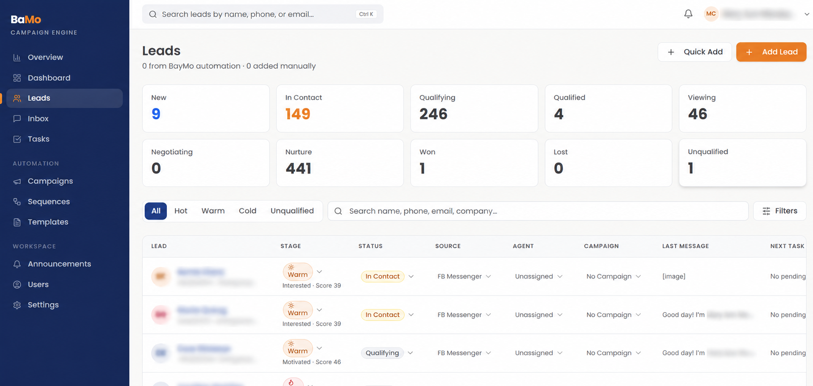
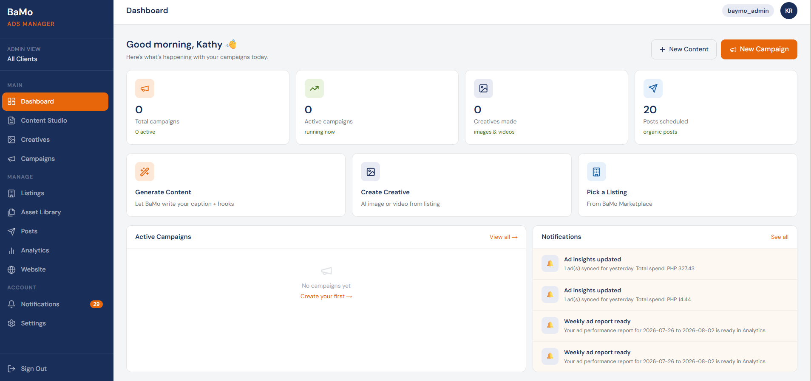

01
Get Found
Build presence through listings and marketing workflows. A broader marketplace is part of the platform roadmap.
BaMo brings AI, technology, and practical innovation closer to the people building and selling Philippine real estate.
BaMo’s first platform brings AI assistance, CRM, lead management, follow-ups, marketing, and real estate workflows into one connected system.
BayMo AI assistance, CRM and lead management, lead temperature and prioritization, automated follow-ups, listings, tasks, content tools, and campaign workflows. The screens below show the existing product.
Broader marketplace infrastructure, learning programs, community initiatives, and innovation events. These are planned extensions of the platform.









Digital transformation is changing how properties are marketed, sold, and managed. AI is accelerating that change. The opportunity is significant — and so is the complexity.
Most real estate professionals did not enter the industry to become technology specialists. They should not have to test dozens of systems just to remain competitive.
We identify useful technology, translate it into practical real estate workflows, and make it accessible to Philippine real estate professionals.
Technology should simplify real estate work — not create more work.
Real estate professionals spend too much time switching between inquiries, follow-ups, listings, content, ads, and admin work. Important leads can get buried while the agent is on a viewing, on the road, or talking to another client.
BayMo, the AI assistant inside BaMo, works beside the agent — helping carry the repetitive work while the human stays in control of the relationship.
Build presence through listings and marketing workflows. A broader marketplace is part of the platform roadmap.
Bring inquiries and lead activity into a structured pipeline.
BayMo helps reply, qualify, follow up, prioritize, and flag what needs attention.
The human focuses on serious conversations, viewings, negotiation, and closing.
BaMo is the broader company and platform. BayMo is its AI assistant — helping handle inquiries, organize leads, prioritize opportunities, assist with follow-ups, and reduce repetitive sales work.
Help handle inquiries, qualify intent, and surface leads that need a human response.
Keep leads, tasks, follow-ups, viewings, and conversations visible in one workflow.
Create listing content, social posts, campaign assets, and marketing support without starting from zero.
BaMo is being built around how real estate professionals in the Philippines actually work: local knowledge, connected workflows, and the tools agents already use.
Built around Philippine real estate workflows, language, behavior, and market realities.
Purpose-built for real estate professionals, with tools designed around their industry and operating needs.
Designed around the complete journey: Lead → Conversation → Qualification → Follow-up → Marketing → Closing.
Real conversations and lead activity inform workflow improvements and operational decisions.
Fits into the tools and channels agents already use.
Connecting technology with planned marketplace infrastructure, education, community, and industry partnerships.
Nearly a decade of firsthand real estate sales, lead management, and process automation experience informs what we build.
Planned practical learning programs will help professionals apply new tools with confidence.
Building an innovation ecosystem for Philippine real estate.
Tools people use.
AI assistance, CRM, lead management, automation, listings, marketing, team operations, and connected real estate workflows.
Broader marketplace tools and infrastructure are on the roadmap.
Explore the platform ↗Knowledge people can apply.
BaMo will organize seminars, workshops, and learning programs around:
Curricula and schedules are in development.
People and ideas coming together.
Connecting agents, brokers, developers, technology companies, startups, marketing specialists, sales experts, government and ecosystem partners, and industry innovators.
Planned events, summits, partnerships, collaborations, and community programs will bring these groups together.
Explore the summit ↗Together, these form the BaMo ecosystem.
BaMo’s role is to make powerful technology practical, understandable, and useful in everyday real estate work.
“The goal is not to make agents learn more technology. The goal is to make powerful technology simple enough to work for them.”
AI empowers the professional. Professionals remain in control of client conversations, judgment, negotiation, and closing.
These published figures are a snapshot of BaMo’s operating lead and conversation workflows, not a live counter. They show practical platform use, not customer counts or revenue. Snapshot: September 10, 2026. Reply-rate comparisons use first-responder cohorts; automated follow-ups are measured separately.
CRM snapshot: September 10, 2026. AI versus human reply comparison groups leads by whether their first outbound response was AI or human. Automated follow-up replies are tracked separately (218 replies within 48 hours from 1,307 follow-ups sent). These are observed operating results, not universal performance guarantees or unique paying-customer counts.
An AI assistant is only one part of the system. Connected workflows turn conversations and lead activity into practical daily operations.
Inquiry handling, lead qualification, follow-up support, and AI-assisted content within BaMo.
n8n orchestration connects intake and operational workflows, helping coordinate repetitive work across the system.
Product screens show lead pipelines, conversations, campaign activity, tasks, and follow-up workflows.
Agent-facing screens bring leads, listings, tasks, content, and the BayMo assistant into one working experience.
Existing workflows connect lead handling with content, creatives, and campaign management.
AI supports repetitive work while agents manage relationships, viewings, negotiation, and closing.
Our existing commercial model combines platform access, team deployments, and optional marketing services. These are offering categories, not a claim of revenue earned from every channel.
Agent and professional subscriptions for access to the BaMo platform and BayMo AI assistant.
Platform deployments for brokerages, developer sales teams, and organizations, scoped to their operating workflows.
Paid advertising and campaign execution services, with marketing support scoped to the services currently offered.
Developer or enterprise deployments embedded into team operations, with integration requirements assessed case by case.
Team / Enterprise describes who we serve; Embedded Systems describes how the platform can be deployed. They can overlap within one engagement and are not counted as separate revenue.
Explore future / developing revenue channels ↓These opportunities are being developed alongside the broader ecosystem. They are not presented as current revenue streams.
Potential monetization around listings, visibility, and marketplace tools as the platform develops.
Planned paid workshops, seminars, and professional learning programs through BaMo Learning.
Potential sponsorships, events, industry collaborations, and strategic partnerships. No sponsorship or partnership revenue is announced.
BaMo is operated by REPH Innovations Corp., doing business under the name and style of BaMo. We are building AI-assisted real estate infrastructure from Lipa City, Batangas, with a focus on helping Filipino real estate professionals work, market, and follow up more effectively.
Founder & CEO, BaMo
For nearly a decade, Katherine has worked directly inside real estate sales and lead-management operations, supporting agents and investors across the U.S. market.
Her experience spans lead generation, CRM management, follow-up, qualification, appointment setting, sales pipelines, and real estate process automation.
BaMo was built from a problem she experienced firsthand:
Real estate professionals are generating more leads, messages, and opportunities than they can consistently manage.
After years of working with mature real estate systems abroad, she saw the opportunity to build something designed specifically for the Philippine market — combining AI, local workflows, lead intelligence, and automation into a practical platform for Filipino real estate professionals. That operating experience now informs BaMo’s broader plans for learning and industry collaboration.
BaMo is the product of nearly 10 years of understanding how real estate professionals actually work — and what gets lost when the systems behind them are too complicated or disconnected.
We envision BaMo becoming a trusted technology and innovation platform for Philippine real estate — where agents, brokers, developers, and organizations can access the tools, knowledge, systems, and industry connections needed to navigate rapid technological change.
Our technology layer will continue connecting professional identity, listings, marketing, lead intelligence, automation, CRM, and day-to-day operations as the platform develops.
Technology alone is not enough. Through planned educational programs, industry events, and partnerships, BaMo will help professionals apply AI, digital marketing, automation, sales technology, and emerging tools to real estate work.
Better tools. Better knowledge. Better systems.
Our aim is to empower real estate professionals to compete, grow, and serve their clients. Learning, community initiatives, and broader marketplace development remain planned.
Concept vision — not an existing BaMo facility.
Helping Philippine Real Estate Navigate the AI Era.
· Lipa City, Batangas
A planned gathering of real estate professionals, developers, sales leaders, marketers, technology specialists, and innovators exploring how AI, advertising, modern sales systems, automation, and emerging technologies are changing Philippine real estate.
Practical ways to reduce repetitive work.
Navigating modern property marketing.
Systems that support human relationships.
Connecting inquiries, qualification, and follow-up.
Communicating property value through digital content.
Understanding the tools shaping real estate.
Venue details, registration, program, speakers, and sponsorship packages will be announced when confirmed. Topic areas are planned, not a finalized agenda.
There are several ways to help make practical innovation more accessible. Start a conversation about the role that fits your organization.
Support the growth of a Philippine-built real estate technology platform.
Explore BaMo deployments across your sales teams.
Discuss integrations and collaboration.
Help shape practical seminars, workshops, and events.
Discuss support for planned innovation programs and events.
Support technology adoption, growth, and market development.
BaMo is open to conversations with real estate professionals, strategic partners, investors, accelerators, and government innovation programs.
Prefer email? kathytalabis@bahaymo.com